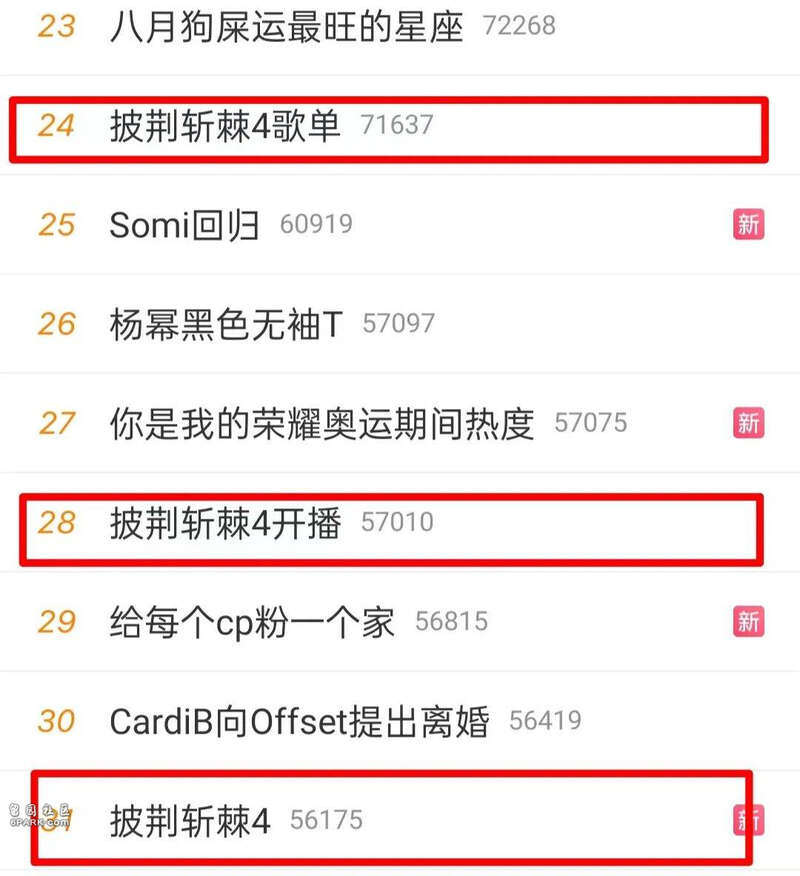
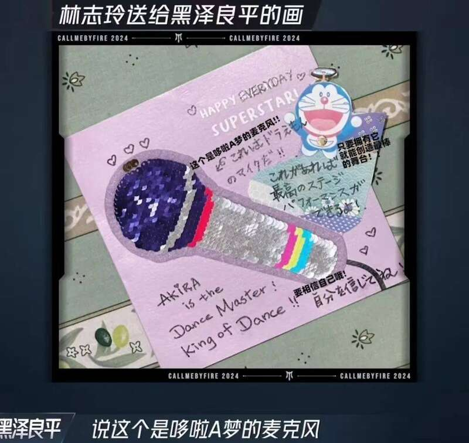
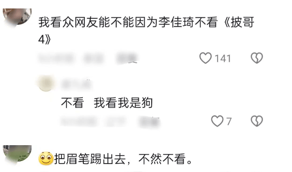
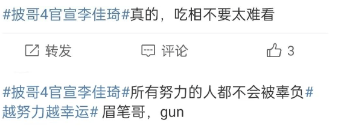

8月2日，《披哥4》开播，一经播出就登上了多个热搜，引发关注和讨论。

节目一开始，所有人被分成两个部分，分别是滚烫哥哥和炙热弟弟。然后就是熟悉的自我介绍了，率先出场的李克勤自称有“脸盲症”，后面的人出场时，他边看屏幕边对着名单认人。
综艺熟人向佐戴着帽子出场，坦言这是在向《奥本海默》致敬，当被问想过怎样的人生，向佐说他计划65岁之后去流浪，老婆郭碧婷已经同意了。
有着“古装美男”称号的严屹宽，透露他已经十多年没去理发店了，平时也不刮胡子，对颜值不是那么在意，不过这次为了节目，还是去理发店弄了一下造型。
黑泽良平上来秀了一把恩爱，他说很珍惜和林志玲在一起的时光，并透露得知他要过来参加节目，林志玲给他写了信。
信里画了麦克风的油画，旁边还有机器猫，黑泽良平称这就像施了魔法一样，就会有信心。提到老婆林志玲，黑泽良平笑得合不拢嘴，肉眼可见的幸福。

徐海乔在节目上回应“前夫哥”的称号，表示一点都不介意大家这么说，甚至还很开心，因为是刘亦菲的“前夫哥”，林更新的“岳父”，说着说着还不忘帮刘亦菲宣传新剧《玫瑰的故事》。
在之后的场外打call环节，刘亦菲发来语音，为徐海乔加油打气，徐海乔的笑容收不住，自称“人生赢家”，这波又让他爽到了，真是追星成功了。
另外，还有“许幻山”的扮演者李泽锋，付辛博、胡夏、王铮亮、林依轮等哥哥们参加节目，阵容还是比较不错，很多都是观众熟悉的明星。
值得注意的是，画面播放到其他的明星，弹幕都很正常，但是李佳琦一出现，弹幕就开始阴阳怪气、冷嘲热讽了。有网友认为李佳琦是网红主播，又不是明星，不懂为什么请他，还有网友说希望李佳琦第一轮就被淘汰，质问他努力了吗？
从第一期来讲，李佳琦的镜头不算很多，却备受关注，他做完自我介绍出场后，在角落里和其他人打招呼，表现得十分礼貌。但是其他人对他的反应平平，不是很热情，可能是不熟吧。
后来，听完分组和比赛规则，石凯说反正就要第一个出场，就得炸场，其他人也随声附和。
李佳琦赶紧在一旁解释，“哥哥们，规则是根据对战关系，而不是对战顺序，所以不用去管明天的出场顺序”，但是没有人理他。
如果说之前打招呼没人理会李佳琦，是因为不熟，那么现在他在认真讲规则，其他人还不搭理他，这就有些尴尬了，似是有意冷落他，体现出娱乐圈的现实与残酷。
之后，李佳琦接受采访，表示大家好像不太懂规则，他们一直在说谁第一个演出，工作人员询问“你给大家讲了，大家听懂了吗”？
李佳琦说，“大家没听懂”，说完无奈苦笑，以此来缓解尴尬。
在训练的时候，李佳琦说“看到那些弟弟们每天早上回来，洗了个澡就出去录制一整天，感觉大家都在默默的努力，有一种暗自较劲的感觉，他们这种拼搏的状态，不只是完成了一个表演”。
好家伙，李佳琦这是自己在提“努力梗”啊，《披哥4》开播后，虽然他的镜头不多，但还是遭到了一众网友的抵制，声称有李佳琦就不看节目，希望把李佳琦踢出去。

关于李佳琦被抵制的原因，想必大家都清楚，他之前因为卖79元眉笔，有网友质疑价格贵，他却责怪对方不努力，没有认真工作，要从自身找原因。
那时，李佳琦背刺打工人的事情闹得很大，他掉粉超过100万，意识到问题的严重性后，李佳琦道歉说“对不起，我让大家失望了”。
但是对于他的道歉，大多数人并不买账，认为他只是迫于舆论压力才这么做，从那之后，李佳琦的口碑一直不太好。
其实，就在前几天，《披哥4》节目组官宣阵容，看到李佳琦，评论区就是一片抵制，直到现在开播，抵制的声音都有增无减。

事情越闹越大，不仅节目组评论区被冲，湖南卫视也被牵连，遭到了网友们的谩骂和吐槽。
所以，互联网是有记忆的，李佳琦的“眉笔事件”，让他翻车被嘲，现在上节目遭冷落，体现出娱乐圈的现实，也说明公众人物要谨言慎行，要尊重观众尊重顾客，背刺打工人的人注定会被淘汰
Advertisements